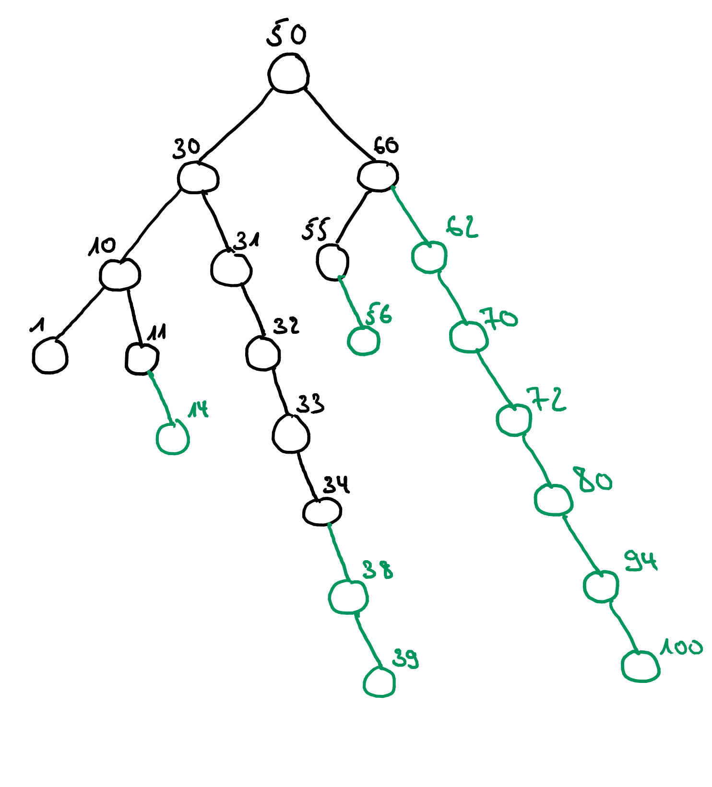
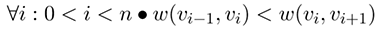

Aufgabe 4
Dimitri Meier, Saeed Shanidar,
Aufgabe 4.1 (Summenpaare)
Gegeben sei eine Sequenz S von ganzen Zahlen und eine ganze Zahl K. Zu berechnen ist die
Anzahl der Paare von Elementen (P;Q) aus S für die gilt:
P + Q = K
Beispiel: Bei der Eingabe sumPairs([1,4,3,7,2,2],5) existieren 4 Paare => (1,4),(4,1),(3,2),(2,3)
Implementierung
Testergebnisse
Ergebnis: Laufzeit vom Algorithmus O(|S| log(|S|))
Es wird in der Berechnung O(|S|) angezeigt, da das Array sortiert werden muss.
Dies erfolgt mittles MergeSort O(|S|log(|S|)).
Daraus folgt die Laufzeit von O(|S|log(|S|)).
Die Laufzeit ist Abhängig von der Größe der Sequenz.
Experiment: Zeitaufwand vom Algorithmus sumPairs(seq,value)
Aufgabe 4.2 (Mittelpunkte)
Gegeben sei eine Sequenz seq von ganzen Zahlen. Zu berechnen ist ein Index i für den gilt,
dass die Summe der Elemente links gleich der Summe der Elemente rechts von i ist: $\sum\nolimits_{0 \leq j < i}$ S[j] = $\sum\nolimits_{i < k < |S|}$ S[k]
Der Rückgabewert -1 zeigt an, dass es keinen solchen Index gibt.
Die Implementierung soll in O(|S|) laufen und höchstens O(|S|) zusätzlichen Speicherbedarf haben.
Implementierung
Testergebnisse
Ergebnis: Laufzeit vom Algorithmus O(|S|)
Die Laufzeit ist abhängig von der Größe des Arrays.
Der Platzbetrag ist in O(1), da wir nur mit zwei Variablen arbeiten.
Experiment: Zeitaufwand vom Algorithmus mittelpunkte(seq)
Aufgabe 4.3 (Längste Pfade ohne Richtungswechsel)
Gegeben sei ein binärer Baum T = (V, E) und die Funktionen r, l : V ? V ? {nil}, die zu
einem Knoten das jeweils rechte oder linke Kind bestimmen (nil bedeutet, dass der Knoten
kein rechtes bzw. linkes Kind hat). Zu berechnen ist die maximale Distanz zwischen den
Knoten v0, vn für die gilt, dass sie auf einem Pfad von der Wurzel des Baums zu einem Blatt
liegen und zusätzlich gilt
?i : 0 ? i < n • l(vi) in (v0, . . . , vn) oder ?i : 0 ? i < n • r(vi) in (v0, . . . , vn)
Die Implementierung soll in O(V ) laufen und höchstens O(V ) zusätzlichen Speicherbedarf
haben.
Implementierung
Testergebnisse
Beispielgraph 4.3

Experiment Zugriffe auf die Struktur X: Werte, auf die getestet wird Y: Anzahl der Zugriffe
Aufgabe 4.4 (Längste Pfade mit aufsteigendem Kantengewicht)
Zu berechnen ist die Länge n des längsten Pfades (v0,...,vn) eines gerichteten Graphen G = (V,E) mit Gewichtsfunktion w : E -> R für den gilt, dass die Kantengewichte streng monoton zunehmen:

Der Graph erlaubt Kanten der Form (v,v).
Die Implementierung soll in O(V + E log(E)) laufen und höchstens O(V + E) zusätzlichen Speicherbedarf haben.
Implementierung
Testergebnisse
Ergebnis: Die Laufzeit beträgt O(E) und hat einen Speicherbedarf von O(V+E).
"BeispielGraph" == graph_5

Experimente